Estimators
Taught in: Lesson 3.A.1 · Sampling Distribution for a Proportion

- 3.1.A.1When estimating a population parameter, an estimator is unbiased if, on average, the value of the estimator does not underestimate or overestimate the population parameter.
- 3.1.B.1A sample statistic is a point estimator of the corresponding population parameter and can be thought of as the estimate of the population parameter. For example, the sample proportion $\hat{p}$ is a point estimator for the population proportion $p$.
Sampling distributions for sample proportions (part A)
Taught in: Lesson 3.A.1 · Sampling Distribution for a Proportion, Lesson 3.A.2 · Conditions for Sampling a Proportion


- 3.2.A.1For a population with population proportion $p$, when the sampled values are independent, the sampling distribution of a sample proportion $\hat{p}$ has a mean $\mu_{\hat{p}}=p$ and a standard deviation $\sigma_{\hat{p}}=\sqrt{\dfrac{p(1-p)}{n}}$.
- 3.2.B.1Sampling without replacement requires that two conditions be met: 3.2.B.1.i The randomization condition—the data should be collected using a random sample. 3.2.B.1.ii The 10% condition—the population size must be at least 10 times larger than the sample size ($n\le 10\%N$), where $N$ is the size of the population and $n$ is the sample size.
- 3.2.B.2The sampling distribution of the sample proportion $\hat{p}$ is approximately normal provided the sample size is large enough. To ensure the sample size is large enough, the following condition must be met: $np\ge 10$ and $n(1-p)\ge 10$, where $np$ is the expected number of successes and $n(1-p)$ is the expected number of failures.
- 3.2.C.1The mean, standard deviation, and probabilities for a sampling distribution of a sample proportion should be interpreted in the context of a specific population.
Constructing a confidence interval for a population proportion (part A)
Taught in: Lesson 3.A.3 · Intro to Confidence Intervals, Lesson 3.A.4 · Interval for a Proportion, Lesson 3.A.5 · Confidence & Margins of Error
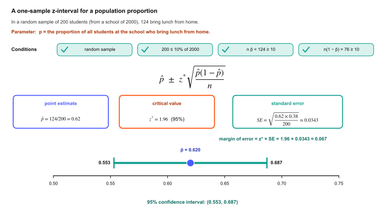
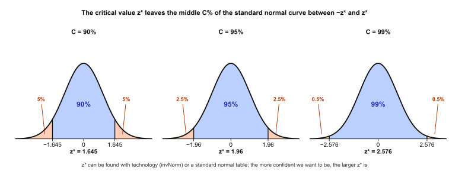

- 3.3.A.1A confidence interval is an interval estimate for a population parameter. Based on the sample proportion, a confidence interval can be calculated to estimate the value of a single population proportion. The appropriate confidence interval procedure is a one-sample z-interval for a population proportion.
- 3.3.A.2The parameter for a confidence interval for a population proportion should reference the proportion, the response variable, and the population in context.
- 3.3.B.1A one-sample $z$-interval for a population proportion requires that three conditions be met: 3.3.B.1.i The randomization condition—the data should be collected using a random sample. 3.3.B.1.ii The 10% condition—when sampling without replacement, the population size must be at least 10 times larger than the sample size ($n\le 10\%N$), where $N$ is the size of the population and $n$ is the sample size. 3.3.B.1.iii The normality condition—the observed number of successes, $n\hat{p}$, and the observed number of failures, $n(1-\hat{p})$, should be at least 10.
- 3.3.C.1$z^{*}$ denotes a critical value, such that $-z^{*}$ and $z^{*}$ represent the boundaries enclosing the middle $C$% of the standard normal distribution, in which $C$% is an approximate confidence level with which the population proportion is estimated.
- 3.3.C.2An interval estimate can be constructed as point estimate $\pm$ (margin of error). For a population proportion, the one-sample $z$-interval estimate is $\hat{p}\pm z^{*}\sqrt{\dfrac{\hat{p}(1-\hat{p})}{n}}$.
- 3.3.D.1The standard error ($SE$) of a statistic is an estimate of the standard deviation of the sampling distribution of the statistic. The standard error of the sample proportion $\hat{p}$ is $SE_{\hat{p}}=\sqrt{\dfrac{\hat{p}(1-\hat{p})}{n}}$.
- 3.3.D.2The standard error quantifies the typical amount that a statistic will vary from the value of the corresponding population parameter.
- 3.3.D.3The margin of error of $\hat{p}$ is half the width of the confidence interval and is calculated as the critical value ($z^{*}$) times the standard error ($SE$) of $\hat{p}$, which equals $z^{*}\sqrt{\dfrac{\hat{p}(1-\hat{p})}{n}}$.
- 3.3.D.4The formula for the margin of error ($MOE$) can be rearranged to solve for $n$, $n=\dfrac{(z^{*})^{2}\hat{p}(1-\hat{p})}{(MOE)^{2}}$, the minimum sample size needed to achieve a given margin of error. For this purpose, if $\hat{p}$ is not defined or unable to be calculated, use $\hat{p}=0.5$ in order to find the upper bound for the sample size that will result in a given margin of error.
Justifying a claim based on a confidence interval for a population proportion
Taught in: Lesson 3.A.5 · Confidence & Margins of Error
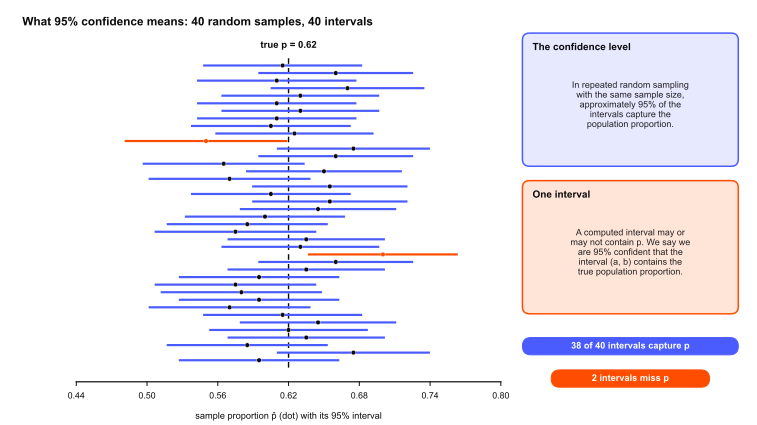
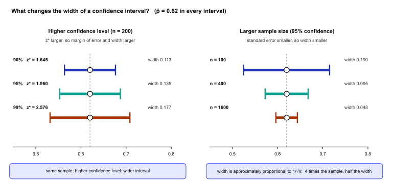

- 3.4.A.1Because the confidence interval for a population proportion is calculated based on a sample from a population, the computed interval may or may not contain the value of the population proportion.
- 3.4.A.2The interpretation of the confidence level is that in repeated random sampling with the same sample size, approximately C% of confidence intervals calculated will capture the population proportion, with C representing the numerical value of the confidence level used.
- 3.4.A.3When interpreting a C% confidence interval for a population proportion, we say we are C% confident that the interval (a, b) contains the true value of the parameter for the population, where a represents the lower limit and b represents the upper limit. An interpretation of a confidence interval for a population proportion includes a reference to the parameter with details about the population it represents in the context of the study.
- 3.4.B.1A confidence interval for a population proportion provides a range of plausible values that may serve as convincing evidence to support a particular claim about the population proportion.
- 3.4.C.1For a given sample, increasing the confidence level will result in the following: 3.4.C.1.i The critical value will increase. 3.4.C.1.ii The margin of error will increase. 3.4.C.1.iii The width of the confidence interval will increase.
- 3.4.C.2Increasing the sample size decreases the standard error. Thus, when all other things remain the same, the width of a confidence interval for a population proportion tends to decrease as the sample size increases. For a confidence interval for a population proportion with a given confidence level, the width of the interval is approximately proportional to $\dfrac{1}{\sqrt{n}}$.
Setting up a test for a population proportion (parts A and B)
Taught in: Lesson 3.A.6 · Introduction to Hypothesis Tests, Lesson 3.A.7 · Hypothesis Test for One Proportion
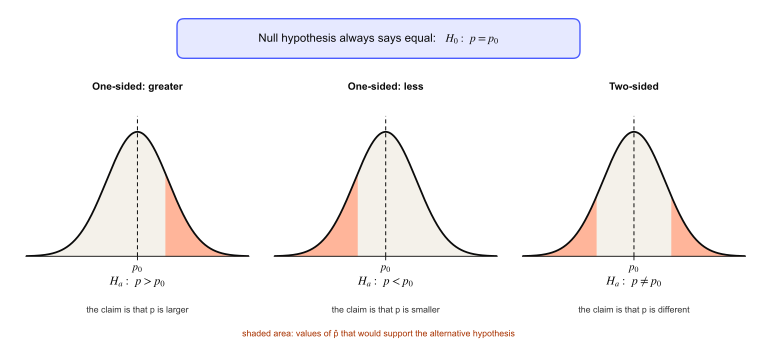

- 3.5.A.1A hypothesis test is a statistical inference procedure that is used to make a decision about the value of a population parameter. The appropriate hypothesis testing procedure is a one-sample z-test for a population proportion.
- 3.5.A.2The parameter for a hypothesis test for a population proportion should reference the population parameter, the response variable, and the population in context.
- 3.5.B.1In the hypothesis testing procedure, the null hypothesis, $H_0$, is the statement about a parameter that is assumed to be correct unless there is convincing statistical evidence suggesting otherwise. It is the status quo condition. The alternative hypothesis, $H_a$, is the claim or belief about a parameter for which evidence is being collected. A researcher’s claim or belief about the population parameter is represented by the alternative hypothesis.
- 3.5.B.2The null hypothesis contains an equality reference ($=$, $\ge$, or $\le$). Although the null hypothesis for a one-sided test may include an inequality symbol, in AP Statistics it is tested at the boundary of equality. The alternative hypothesis with $<$ or $>$ is called one-sided, and the alternative hypothesis with $\ne$ is called two-sided.
- 3.5.B.3The null hypothesis for a one-sample $z$-test for a population proportion is as follows: $H_0: p=p_0$, where $p_0$ is the null hypothesized value for the population proportion. A one-sided alternative hypothesis for a one-sample $z$-test for a population proportion is either $H_a: p<p_0$ or $H_a: p>p_0$. A two-sided alternative hypothesis is $H_a: p\ne p_0$.
- 3.5.C.1A one-sample $z$-test for a population proportion requires that three conditions be met: 3.5.C.1.i The randomization condition—the data should be collected using a random sample. 3.5.C.1.ii The 10% condition—when sampling without replacement, the population size must be at least 10 times larger than the sample size ($n\le 10\%N$), where $N$ is the size of the population and $n$ is the sample size. 3.5.C.1.iii The normality condition—the expected number of successes, $np_0$, and the expected number of failures, $n(1-p_0)$, should be at least 10.
p-values
Taught in: Lesson 3.A.7 · Hypothesis Test for One Proportion
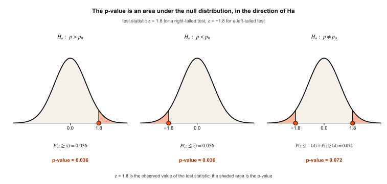

- 3.6.A.1Given the null hypothesis is true, there is a probability distribution of the test statistic called the null distribution. Using the null distribution, the $p$-value is the probability of obtaining a test statistic as extreme or more extreme (i.e., in the direction of the alternative hypothesis) than the test statistic that is observed given that the null hypothesis is true. That is, when $x$ is the test statistic, the $p$-value is determined by finding the following: 3.6.A.1.i The probability at or above the observed value of the test statistic ($P(z\ge x)$), if the alternative is $>$ 3.6.A.1.ii The probability at or below the observed value of the test statistic ($P(z\le x)$), if the alternative is $<$ 3.6.A.1.iii The probability less than or equal to the negative of the absolute value of the test statistic plus the probability greater than or equal to the absolute value of the test statistic, ($P(z\le -|x|)+P(z\ge |x|)$), if the alternative is $\ne$
- 3.6.A.2If the distribution of the test statistic has been simulated, the $p$-value is the proportion of values in the null distribution that are as extreme or more extreme than the observed value of the test statistic. This is as follows: 3.6.A.2.i The proportion at or above the observed value of the test statistic, if the alternative is $>$ 3.6.A.2.ii The proportion at or below the observed value of the test statistic, if the alternative is $<$ 3.6.A.2.iii The proportion less than or equal to the negative of the absolute value of the test statistic plus the proportion greater than or equal to the absolute value of the test statistic, if the alternative is $\ne$
- 3.6.A.3An interpretation of the p-value of a hypothesis test for a population proportion should include a statement that the p-value is computed by assuming the null hypothesis is true (i.e., by assuming the true population proportion is equal to the particular value stated in the null hypothesis in context).
- 3.6.A.4Small p-values indicate that the observed value of the test statistic would be unusual if the null hypothesis were true and therefore provide evidence for the alternative hypothesis. The lower the p-value, the more convincing the statistical evidence for the alternative hypothesis.
- 3.6.A.5p-values that are not small indicate that the observed value of the test statistic would not be unusual if the null hypothesis were true and therefore do not provide convincing statistical evidence for the alternative hypothesis, nor do they provide evidence that the null hypothesis is true.
Carrying out a test for a population proportion
Taught in: Lesson 3.A.7 · Hypothesis Test for One Proportion


- 3.7.A.1The test statistic for testing a population proportion is $z=\dfrac{\hat{p}-p_0}{\sqrt{\dfrac{p_0(1-p_0)}{n}}}$. The $z$-statistic has a standard normal distribution when the null hypothesis is true.
- 3.7.A.2The distribution of the test statistic assuming the null hypothesis is true (null distribution) can be approximated by a probability model (e.g., a theoretical distribution such as the standard normal distribution).
- 3.7.A.3The p-value of a one-sample z-test for a population proportion is found from the standard normal distribution using a table or technology.
- 3.7.B.1The significance level of a hypothesis test, denoted by $\alpha$, is the predetermined probability of rejecting the null hypothesis given that it is true. The significance level may be given or determined by the researcher. The relationship between a $p$-value and the significance level of a hypothesis test determines whether a result is statistically significant.
- 3.7.B.2A formal decision in a hypothesis test explicitly compares the $p$-value to the significance level, $\alpha$. If the $p$-value $\le\alpha$, then reject the null hypothesis, $H_0: p=p_0$. If the $p$-value $>\alpha$, then fail to reject the null hypothesis.
- 3.7.B.3Rejecting the null hypothesis means there is convincing statistical evidence to support the alternative hypothesis. Failing to reject the null hypothesis means there is not convincing statistical evidence to support the alternative hypothesis.
- 3.7.B.4A hypothesis test can lead to rejecting or not rejecting the null hypothesis but can never lead to concluding or proving that the null hypothesis is true. Lack of statistical evidence for the alternative hypothesis is not the same as evidence for the null hypothesis.
- 3.7.B.5The results of a hypothesis test for a population proportion can serve as the statistical reasoning to support the answer to an investigative question about the population that was sampled.
- 3.7.B.6A conclusion for the hypothesis test for a population proportion is stated in context consistent with, and in terms of, the alternative hypothesis using non-definitive language. The conclusion should contain a reference to the parameter and the population.
Potential errors when performing tests
Taught in: Lesson 3.A.8 · Errors & Power
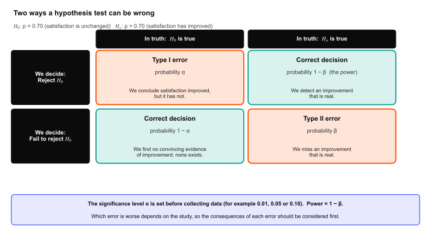
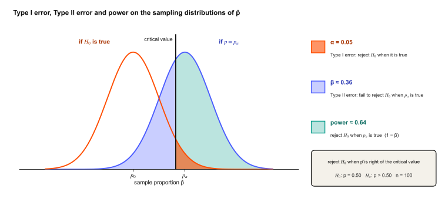

- 3.8.A.1A Type I error occurs when there is convincing statistical evidence that the alternative hypothesis is true (due to the small p-value), but it is not.
- 3.8.A.2A Type II error occurs when there is not convincing statistical evidence that the alternative hypothesis is true (due to the large p-value), but it is.
- 3.8.A.3The power of a hypothesis test is the probability that a hypothesis test will correctly reject the false null hypothesis.
- 3.8.B.1The probability of making a Type I error is defined as the significance level, α . For a given study and hypothesis test, the probability of making a Type I error is typically set to a small value (e.g., 0.01, 0.05, 0.10) prior to collecting the data.
- 3.8.B.2The probability of making a Type II error is $1-\text{power}$.
- 3.8.C.1For a given study and hypothesis test, the probability of a Type II error should ideally be small, and thus, the power will be large (e.g., $P(\text{Type II error})=0.20$ and $\text{power}=0.80$). The probability of a Type II error decreases and the power increases when any one of the following occurs, provided the others do not change: 3.8.C.1.i Sample size(s) increases. 3.8.C.1.ii Standard error decreases. 3.8.C.1.iii True parameter value is farther from the null hypothesis. 3.8.C.1.iv Significance level ($\alpha$) of a test increases.
- 3.8.D.1In some studies, making a Type I error may have more serious consequences than making a Type II error. In other studies, making a Type II error may have more serious consequences than making a Type I error. The consequences of each error should be considered prior to conducting the study.
- 3.8.D.2Because the significance level, $\alpha$, is the probability of making a Type I error, the consequences of a Type I error influence decisions about a significance level.
- 3.8.D.3Because sample size influences the probability of making a Type II error, the consequences of a Type II error influence decisions about how large the sample size should be.
Sampling distributions for the difference between sample proportions
Taught in: Lesson 3.B.1 · Sampling Distribution for Two Proportions
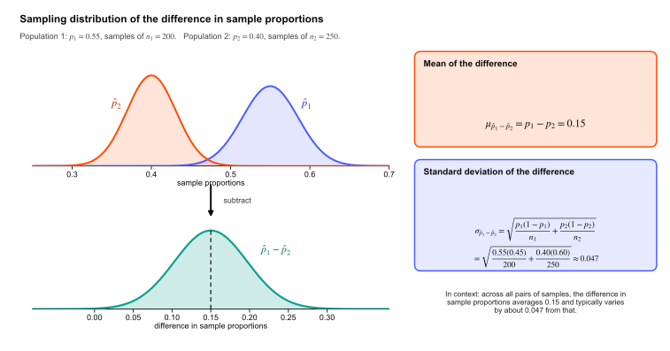

- 3.9.A.1For two independent populations, with population proportions $p_1$ and $p_2$, when the sampled values are independent, the sampling distribution for the difference in sample proportions, $\hat{p}_1-\hat{p}_2$, has a mean, $\mu_{\hat{p}_1-\hat{p}_2}=p_1-p_2$, and standard deviation, $\sigma_{\hat{p}_1-\hat{p}_2}=\sqrt{\dfrac{p_1(1-p_1)}{n_1}+\dfrac{p_2(1-p_2)}{n_2}}$.
- 3.9.B.1When sampling without replacement, two conditions must be met: 3.9.B.1.i The randomization condition—the data should be collected using two independent random samples. 3.9.B.1.ii The 10% condition—the size of each sample should be less than or equal to 10% of the respective population size: $n_1\le 10\%N_1$ and $n_2\le 10\%N_2$, where $N_1$ is the size of population 1 and $N_2$ is the size of population 2. The sample sizes are represented as $n_1$ and $n_2$.
- 3.9.B.2If the data come from an experiment, the data only need to meet the randomization condition. The treatments must be randomly assigned to the experimental units to meet the randomization condition.
- 3.9.B.3The sampling distribution for the difference between sample proportions, $\hat{p}_1-\hat{p}_2$, will have an approximately normal distribution provided both sample sizes are large enough. To ensure that both sample sizes are large enough, the data must meet the following conditions: $n_1p_1\ge 10$, $n_1(1-p_1)\ge 10$, $n_2p_2\ge 10$, and $n_2(1-p_2)\ge 10$, where $n_1p_1$ and $n_2p_2$ are the expected number of successes and $n_1(1-p_1)$ and $n_2(1-p_2)$ are the expected number of failures.
- 3.9.C.1The mean, standard deviation, and probabilities for the sampling distribution for the difference between two sample proportions should be interpreted within the context of two specific populations.
Constructing a confidence interval for the difference between two population proportions
Taught in: Lesson 3.B.2 · Interval for Two Proportions

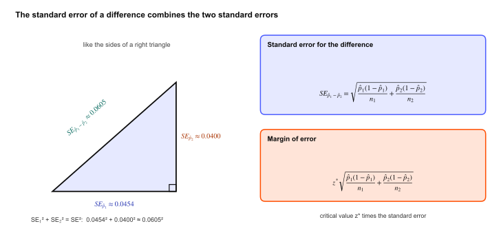
- 3.10.A.1Based on the sample data, a confidence interval can be calculated to estimate the difference between two population proportions. The appropriate confidence interval procedure is a two-sample z-interval for a difference between population proportions.
- 3.10.A.2The parameters of a confidence interval for the difference between two population proportions should refer to the difference in the proportions, the response variable, and the populations in context.
- 3.10.B.1A two-sample $z$-interval for a difference between two population proportions requires that three conditions be met: 3.10.B.1.i The randomization condition—the data should be collected using two independent random samples or a randomized experiment. 3.10.B.1.ii The 10% condition—when sampling without replacement, the size of each sample should be less than or equal to 10% of the respective population size: $n_1\le 10\%N_1$ and $n_2\le 10\%N_2$, where $N_1$ is the size of population 1 and $N_2$ is the size of population 2. The sample sizes are represented as $n_1$ and $n_2$. (Note: This condition is unnecessary when the data are from a randomized experiment.) 3.10.B.1.iii The normality condition—the number of observed successes, $n_1\hat{p}_1$ and $n_2\hat{p}_2$, and number of observed failures, $n_1(1-\hat{p}_1)$ and $n_2(1-\hat{p}_2)$, for both samples are all at least 10.
- 3.10.C.1The point estimate for the difference between two population proportions is $\hat{p}_1-\hat{p}_2$.
- 3.10.C.2For the difference between two population proportions, the interval estimate can be constructed as point estimate $\pm$ (margin of error). The interval estimate for the difference between two population proportions is $(\hat{p}_1-\hat{p}_2)\pm z^{*}\sqrt{\dfrac{\hat{p}_1(1-\hat{p}_1)}{n_1}+\dfrac{\hat{p}_2(1-\hat{p}_2)}{n_2}}$.
- 3.10.D.1The standard error ($SE$) for the difference between two population proportions is $SE_{\hat{p}_1-\hat{p}_2}=\sqrt{\dfrac{\hat{p}_1(1-\hat{p}_1)}{n_1}+\dfrac{\hat{p}_2(1-\hat{p}_2)}{n_2}}$.
- 3.10.D.2For the difference between two population proportions, the margin of error is the critical value ($z^{*}$) times the standard error ($SE$) of the difference between the two proportions, which equals $z^{*}\sqrt{\dfrac{\hat{p}_1(1-\hat{p}_1)}{n_1}+\dfrac{\hat{p}_2(1-\hat{p}_2)}{n_2}}$.
Justifying a claim based on a confidence interval for the difference between two population proportions
Taught in: Lesson 3.B.2 · Interval for Two Proportions
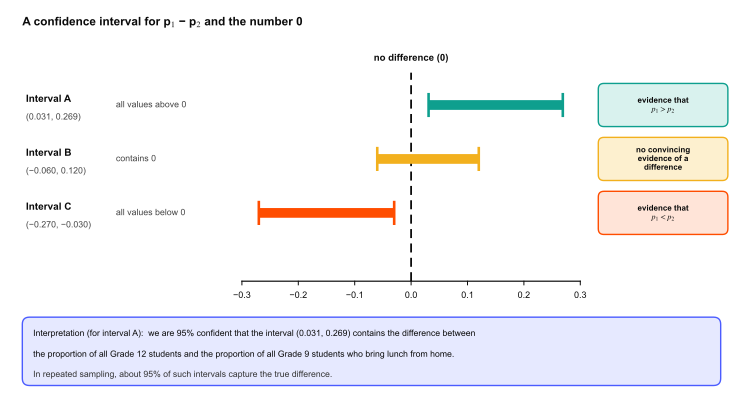
- 3.11.A.1Because the confidence interval for the difference between two population proportions is calculated based on samples from two populations, the computed interval may or may not contain the value for the difference between those two population proportions.
- 3.11.A.2The interpretation of the confidence level is as follows: In repeated random sampling with the same sample sizes from the same populations, approximately C% of confidence intervals created will capture the difference between the two population proportions, where C represents the numerical value of the confidence level used.
- 3.11.A.3When interpreting a C% confidence interval for the difference between two population proportions, we say we are C% confident that the interval a, b contains the parameter for the difference between the populations, where a represents the lower limit and b represents the upper limit. An interpretation of a confidence interval for the difference between two population proportions includes a reference to the parameter with the details about the populations it represents in the context of the study.
- 3.11.B.1A confidence interval for the difference between two population proportions provides an interval of values that may provide convincing evidence to support a particular claim about the difference between the two population proportions. For example, if the interval contains 0, then there is insufficient evidence to conclude there is a difference between the two population proportions. If the interval does not contain 0, there is sufficient evidence to conclude there is a difference between the two population proportions.
Setting up a test for the difference between two population proportions
Taught in: Lesson 3.B.3 · Hypothesis Test for Two Proportions

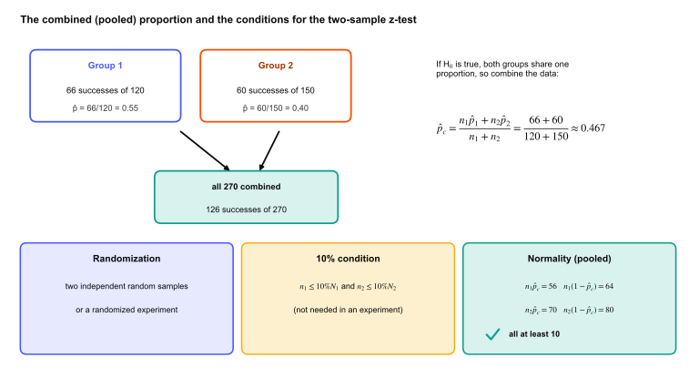
- 3.12.A.1The appropriate testing method for the difference between two population proportions is a two-sample z-test for the difference between two population proportions.
- 3.12.A.2The parameters for a hypothesis test for the difference between two population proportions should reference the population parameters, the response variables, and the populations in context.
- 3.12.B.1For a two-sample $z$-test for the difference between two population proportions, the null hypothesis indicates no difference. The null hypothesis for the difference between two population proportions can be written as either $H_0: p_1=p_2$ or $H_0: p_1-p_2=0$. A one-sided alternative hypothesis for the difference between two population proportions can be written as either $H_a: p_1<p_2$ or equivalently $H_a: p_1-p_2<0$, or $H_a: p_1>p_2$ or equivalently $H_a: p_1-p_2>0$. A two-sided alternative hypothesis for the difference between two population proportions can be written as either $H_a: p_1\ne p_2$ or equivalently $H_a: p_1-p_2\ne 0$.
- 3.12.C.1A two-sample $z$-test for a difference between two population proportions requires that three conditions be met: 3.12.C.1.i The randomization condition—the data should be collected using two independent random samples or a randomized experiment. 3.12.C.1.ii The 10% condition—when sampling without replacement, the size of each sample should be less than or equal to 10% of the respective population size: $n_1\le 10\%N_1$ and $n_2\le 10\%N_2$, where $N_1$ is the size of population 1 and $N_2$ is the size of population 2. The sample sizes are represented as $n_1$ and $n_2$. (Note: This condition is unnecessary when the data are from a randomized experiment.) 3.12.C.1.iii The normality condition—$n_1\hat{p}_c$, $n_1(1-\hat{p}_c)$, $n_2\hat{p}_c$, and $n_2(1-\hat{p}_c)$ must all be at least 10, with $\hat{p}_c=\dfrac{n_1\hat{p}_1+n_2\hat{p}_2}{n_1+n_2}$ being the combined (or pooled) proportion assuming that $H_0$ is true ($H_0: p_1=p_2$ or $H_0: p_1-p_2=0$).
Carrying out a test for the difference between two population proportions
Taught in: Lesson 3.B.3 · Hypothesis Test for Two Proportions

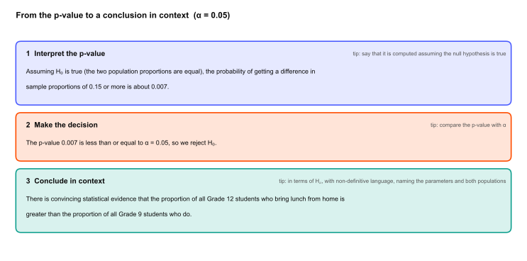
- 3.13.A.1The test statistic for the difference between two population proportions is $z=\dfrac{(\hat{p}_1-\hat{p}_2)-0}{\sqrt{\hat{p}_c(1-\hat{p}_c)}\sqrt{\dfrac{1}{n_1}+\dfrac{1}{n_2}}}$, where $\hat{p}_c=\dfrac{n_1\hat{p}_1+n_2\hat{p}_2}{n_1+n_2}$ is the proportion of successes for the two groups combined. The $z$-statistic has a standard normal distribution when the null hypothesis is true.
- 3.13.A.2The p-value for a two-sample z-test for the difference between two population proportions can be found from the standard normal distribution using a table or technology.
- 3.13.B.1The p-value is the probability of obtaining a test statistic as extreme or more extreme than the test statistic that was observed (i.e., in the direction of the alternative hypothesis) given that the null hypothesis is true. An interpretation of the p-value of a hypothesis test for a difference between two population proportions should include a statement that the p-value is computed assuming the null hypothesis is true (i.e., by assuming that the true population proportions are equal to each other in context).
- 3.13.C.1A formal decision in a hypothesis test for the difference between two population proportions explicitly compares the $p$-value to the significance level, $\alpha$. If the $p$-value $\le\alpha$, then reject the null hypothesis, $H_0: p_1=p_2$ or $H_0: p_1-p_2=0$. If the $p$-value $>\alpha$, then fail to reject the null hypothesis.
- 3.13.C.2The results of a hypothesis test for the difference between two population proportions can serve as the statistical reasoning to support the answer to an investigative question about the two populations that were sampled.
- 3.13.C.3A conclusion for the hypothesis test for the difference between two population proportions is stated in context consistent with, and in terms of, the alternative hypothesis using non-definitive language. The conclusion should contain a reference to the parameters and the populations.
Setting up a chi-square test for homogeneity or independence
Taught in: Lesson 3.B.4 · Chi-Square Test for Homogeneity, Lesson 3.B.5 · Chi-Square Test for Independence
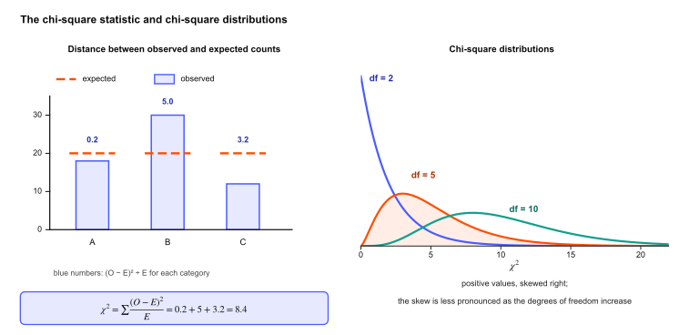

- 3.14.A.1The chi-square statistic measures the distance between observed and expected counts relative to expected counts.
- 3.14.A.2Chi-square distributions have positive values and are skewed right. Within this family of density curves, the skew becomes less pronounced with increasing degrees of freedom.
- 3.14.B.1To determine whether the distributions of a categorical variable for two or more populations are different, the appropriate test is the chi-square test for homogeneity.
- 3.14.B.2A chi-square test for homogeneity should reference the categorical variable and the populations in context.
- 3.14.B.3To determine whether row and column variables in a two-way table of categorical data might be associated in the single population from which the data were sampled, the appropriate test is the chi-square test for independence.
- 3.14.B.4A chi-square test for independence should reference the categorical variables and the population in context.
- 3.14.C.1The appropriate null hypothesis for a chi-square test for homogeneity is $H_0$: there is no difference in the distributions of the categorical variable across populations or treatments. The appropriate alternative hypothesis for a chi-square test for homogeneity is $H_a$: there is a difference in the distributions of the categorical variable across populations or treatments.
- 3.14.C.2The appropriate null hypothesis for a chi-square test for independence is $H_0$: there is no association between two categorical variables in a given population or the two categorical variables in a given population are independent of each other. The appropriate alternative hypothesis for a chi-square test for independence is $H_a$: there is an association between two categorical variables in a given population or the two categorical variables in a given population are not independent of each other.
- 3.14.D.1A chi-square test for homogeneity or independence requires that three conditions must be met: 3.14.D.1.i The randomization condition—the test of independence states that the data should be collected using a random sample. The test for homogeneity states that the data should be collected using independent random samples or a randomized experiment. 3.14.D.1.ii The 10% condition—when sampling without replacement, check that $n\le 10\%N$, where $N$ is the size of the population and $n$ is the sample size. (Note: This condition is unnecessary when the data are from a randomized experiment.) 3.14.D.1.iii The expected counts condition—all expected counts should be greater than 5.
Carrying out a chi-square test for homogeneity or independence
Taught in: Lesson 3.B.4 · Chi-Square Test for Homogeneity, Lesson 3.B.5 · Chi-Square Test for Independence
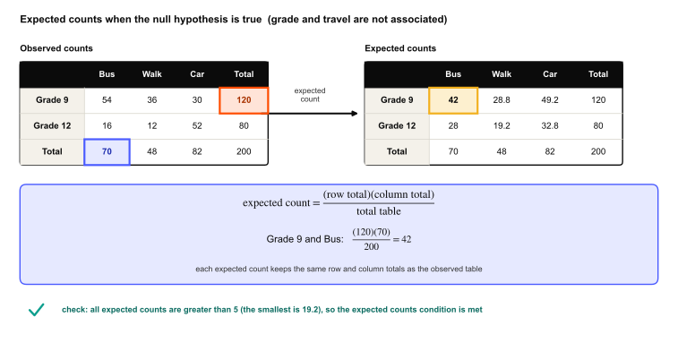

- 3.15.A.1The expected counts (under the null hypothesis) in a particular cell of a two-way table of categorical data can be calculated using the formula $\text{expected count}=\dfrac{(\text{row total})(\text{column total})}{\text{total table}}$.
- 3.15.B.1The appropriate test statistic for a chi-square test for homogeneity or independence is the chi-square statistic $\chi^{2}=\sum\dfrac{(\text{Observed Count}-\text{Expected Count})^{2}}{\text{Expected Count}}$, where the sum is taken over all cells of the two-way table. The chi-square statistics have a chi-square distribution with degrees of freedom equal to $(\text{number of rows}-1)\cdot(\text{number of columns}-1)$ when the null hypothesis is true.
- 3.15.B.2The p-value for a chi-square test for independence or homogeneity is found from a chi-square distribution using a table or technology.
- 3.15.C.1The p-value is the probability of obtaining a test statistic as extreme or more extreme than the test statistic that was observed (i.e., in the direction of the alternative hypothesis) given that the null hypothesis is true. An interpretation of the p-value for the chi-square test for homogeneity or independence should include a statement that the p-value is computed by assuming the null hypothesis is true in context.
- 3.15.D.1A formal decision in a hypothesis test explicitly compares the $p$-value to the significance level, $\alpha$. If the $p$-value $\le\alpha$, then reject the null hypothesis for the appropriate chi-square test. If the $p$-value $>\alpha$, then fail to reject the null hypothesis.
- 3.15.D.2The results of a chi-square test for homogeneity or independence can serve as the statistical reasoning to support the answer to an investigative question about the population that was sampled (independence) or the populations that were sampled (homogeneity).
- 3.15.D.3A conclusion for a chi-square test for homogeneity or independence is stated in context consistent with, and in terms of, the alternative hypothesis using non-definitive language. The conclusion should contain a reference to the population(s).